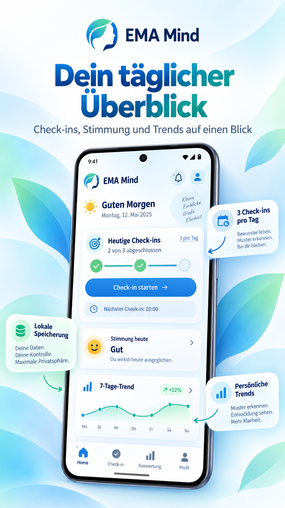
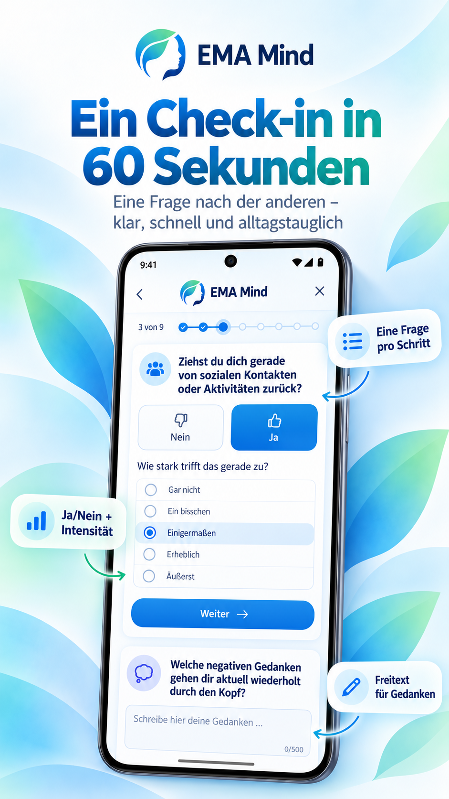
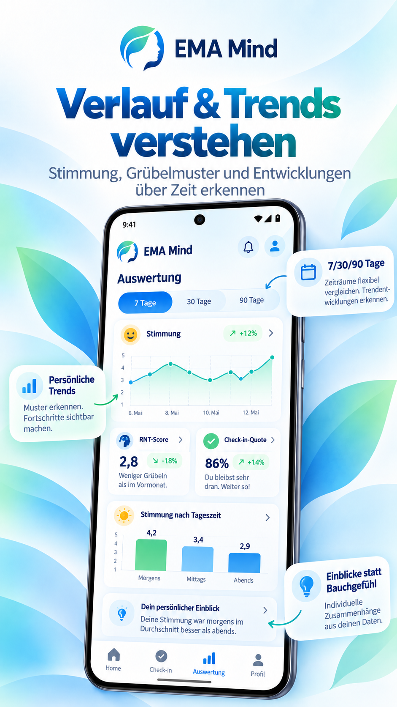
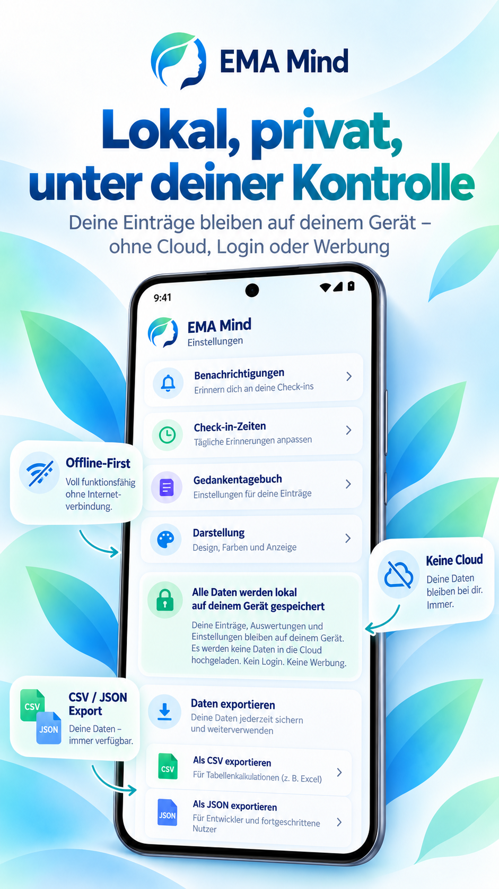

Drei kurze Check-ins
Morgens, mittags und abends. Die Zeiten lassen sich an deinen Alltag anpassen.
EMA Mind begleitet dich mit kurzen Check-ins durch den Alltag und macht Veränderungen bei Stimmung, Grübeln und Wohlbefinden verständlich sichtbar.

Die App ist für regelmäßige Selbstbeobachtung konzipiert – ohne komplizierte Formulare und ohne Datenzwang.
Morgens, mittags und abends. Die Zeiten lassen sich an deinen Alltag anpassen.
Erfasse Stimmung, Interessenverlust, Rückzug und wiederkehrende negative Gedanken.
Vergleiche Zeiträume und erkenne Veränderungen über Tage, Wochen und Monate.
Optionaler Freitext hilft dir, wiederkehrende Gedanken in deinen eigenen Worten festzuhalten.
Benachrichtigungen erinnern dich an geplante Check-ins – nur wenn du sie aktivierst.
Exportiere deine Einträge als CSV oder JSON und entscheide selbst, was du damit machst.


EMA Mind wurde als Offline-first-App geplant. Für deine Check-in-Inhalte ist kein Konto erforderlich und es gibt keine automatische Cloud-Synchronisierung.

EMA steht für wiederholte kurze Erhebungen im Alltag. EMA Mind überträgt dieses Prinzip in eine verständliche Selbstbeobachtungs-App mit Fokus auf Stimmung, Grübeln und persönliche Trends.
EMA Mind dient der Selbstbeobachtung. Die App stellt keine Diagnose und ersetzt keine ärztliche oder psychotherapeutische Behandlung.
Halte fest, wie es dir im Alltag geht – und erkenne Entwicklungen, die im Rückblick leicht verloren gehen.